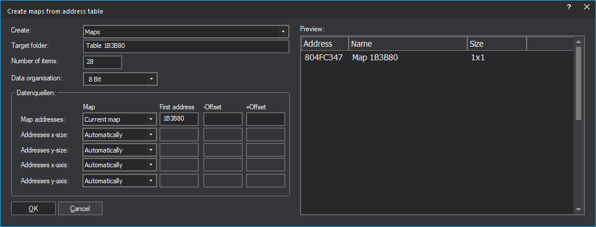

|
The command Selection (Table) -> Maps (Menu Selection) |

  
|
|
The command Selection (Table) -> Maps (Menu Selection) |
|

You can use this dialog to generate the maps (or alternatively comments or markers) from a table with map addresses (in the hexdump).
This command is only available if a continuous, rectangular area is selected. Each address should be on a separate line, then the address is automatically filled in for you. If the rectangular marker is 3 or 5 columns wide, then the additional data for size and axis will be used.
If the addresses in the hex dump use a different offset (such as 0x80000000) than your project, then you can correct the offset with the corresponding fields.
Example:
| · | For the screenshot, a selection was created that starts at 0x1B3B80, is 1 column wide and 28 rows high. This information was then automatically transferred to the dialog. |
| · | WinOLS now looks in the current map (hexdump) at the address 0x1B3B80 and finds the value 0x804FC347 there. This is used as the address for the map data. |
| · | Depending on the project, this may be outside your hex dump, so it may make sense to use an "-Offset" of (here) 0x803F0000. |
| · | For the next map (here: not in the preview), WinOLS looks at the same place in the hexdump, but one line lower. |
Shortcuts:
Toolbar: -
Keyboard: -